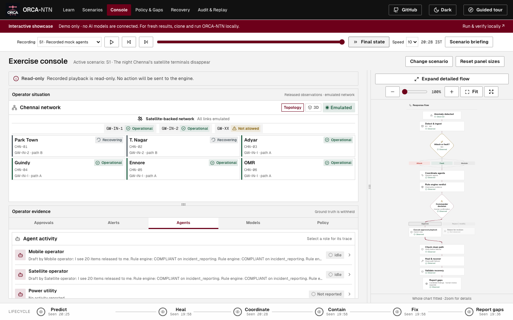

AI agents / Network resilience
ORCA-NTN
When a network breaks,
what happens next?
Agent-assisted investigation and guarded recovery for an emulated satellite-backed network. Built with Team SolarSailor for the ITU AI for Good Sandbox Hackathon UAE.
The hosted demo replays recorded scenarios. Fresh inference runs through the local implementation.

Inside the incident response console ↗